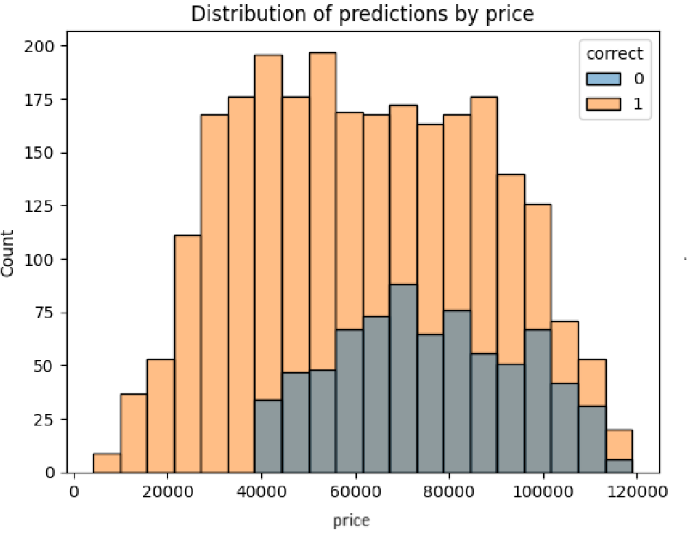
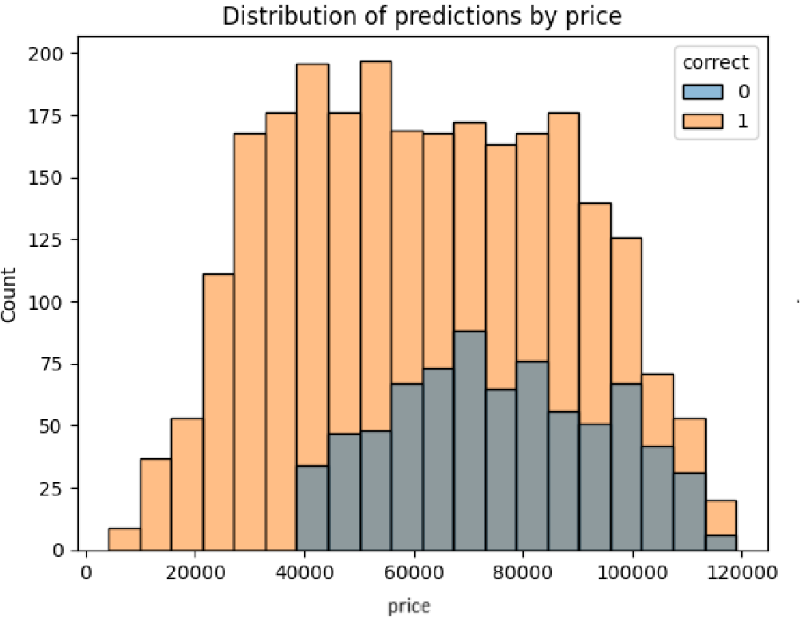

Kaique Yuto Rodrigues
Estudante de Ciência de Dados e Engenheiro Mecânico.

Olá! Sou um estudande de Ciência de Dados e trabalho como Analista de Planejamento Acadêmico PL pela Vitru Educação, desde 2023. Possuo um bacharel em Engenharia Mecânica pela Universidade Estadual de Maringá - UEM. Atualmente cursando uma formação de Cientista de Dados pela Data Science Academy. Sou apaixonado por jogos eletrônicos, de estratégia, e também por ciência e matemática. Nas horas livres gosto de cozinhar e passar um tempo com meus amigos. Se você gostaria de conversar comigo sobre Dados, programação e engenharia, por favor, não deixe de me enviar uma mensagem pelas redes sociais abaixo!
Alguns DashBoards


Alguns Projetos
Neste projeto, trabalhei com uma base de dados contendo informações sobre vendas de carros com o objetivo de prever tendências futuras. Utilizei técnicas de machine learning para desenvolver um modelo de classificação binária, capaz de prever se uma venda seria bem-sucedida ou não, com base em características específicas de cada carro. Abaixo estão
 

Este projeto é uma exploração das regras de associação entre produtos vendidos em uma superloja varejista. O intuito do projeto é determinar relações existentes entre produtos semelhantes baseado em transações de clientes.

Este projeto tem como foco a criação de um modelo de aprendizado de máquina para prever com precisão os custos hospitalares. Ao utilizar algoritmos e técnicas estatísticas, o modelo analisa um conjunto abrangente de dados descritivos dos clientes passados. Ele fornece estimativas precisas de custos, possibilitando uma gestão financeira eficaz e planejamento estratégico em instituições de saúde.

Este projeto teve como foco a seleção de um modelo de machine learning usando a ferramenta Microsoft Azure Machine Learning. Vários modelos e dados diferentes foram utilizados para o treinamento e avaliação dos modelos. Ao final, escolheu-se o modelo com as melhores métricas de performance.


Um simples modelo KNN foi treinado para classificar um desenho de 8x8 pixels em um dígito. Divirta-se